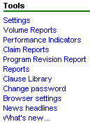

Blacksmith Applications, www.blacksmithapps.com
The options you see under Programs may differ, depending on your implementation.

Settings - Clicking Tools, Settings brings you to the Settings Control Panel page.
Browser settings-Click the Browser settings link to display an illustrated, step-by-step explanation of how your browser should be configured to optimize your use of FORGESM.
News Headlines - Click the news headlines link to display a page with news headlines and links. You can display news headlines from the Food & Beverages area, Technology, or Miscellaneous. Click a headline to display the full article.
What's new... - Click What's New to see a page with FAQ's, Tips and archived articles from Blacksmith.